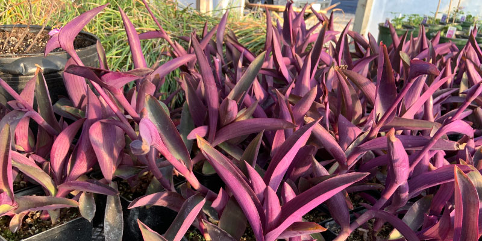

Plants & supplies
One stop for the whole garden.
Green Thumb Nursery is where knowledge, experience, exceptional plants and friendly staff come together to foster community, inspire creativity and nurture the gardener in all of us.

01
Nursery
We are your go-to nursery for all of your gardening and landscaping needs, for novice gardeners and experienced cultivators alike.
We offer woody ornamental trees and shrubs that are well suited for the blazing hot Chattanooga summers but also hardy for our occasional cold snaps. Plants hardy to our local climate mean worry-free, low-maintenance plants that add beauty to your landscape year after year.
- Locally grown, climate-adapted stock
- Horticultural expertise and design help
- The few plants we source come from nearby producers
02
Greenhouse

We’ve been in the greenhouse production business for over 40 years, and it shows in the quality and selection we offer.
Most of our greenhouse inventory starts as seeds or cuttings, and we grow the plants to a mature size so they are ready to ignite your landscape. Locally grown plants with bright, striking color stay vibrant all through the growing season.
Our selection is extensive: shade or sun, perennial or annual, vegetable or flower, and anything else you could want to add life to your garden or decorative containers. We are here to help with any questions you have!
03
Containers

Shop our selection of containers, choose a pre-potted container from the nursery, or bring your own pots to Beth Painter for her special design service.
We are happy to help with the design, adapting it to your style and to your sun or shade, or we are happy to do all of it for you.
- Decorative containers to shop
- Pre-potted containers ready to go
- Bring your own pots for container design
04
Sod
Sod gives you instant gratification: the look is immediate, and it establishes in 1 to 2 weeks instead of 4 to 8 weeks with seed. It comes from the farm with no weeds and needs only water to establish.
Our sod is sold by the piece or by the pallet. Deliveries to the nursery typically run from March through November, and we can special order at other times. Buy it off the pallet (a little cheaper), or we lay it on plastic at the nursery and keep it watered until you are ready to pick up. Pieces are easy to handle and fit in the trunk of a car, and we also deliver by the piece or by the pallet. Call us for details.
Bermuda
Tifway (419), a turf variety developed for lawns and golf courses. Durable and affordable, with good disease resistance and dark green color; great for high-traffic areas.
Fescue
A cool-season grass that stays green all year and tolerates shade. Grown from Turf Type Tall Fescue seed for a darker green, wider blade.
Zoysia
Roots deep to withstand heat, cold, wet or dry. Slower to spread, so it stays out of beds, and it is shade tolerant.
05
Mulch & supplies
Mulch makes or breaks a landscape bed. Beautiful plants catch your eye, but a neatly mulched bed makes them pop.
Bagged mulch in pine, cypress or hardwood loads into the trunk of any car. For larger volumes, shredded hardwood mulch is sold in bulk by the heaping scoop, ready for your truck or trailer. Long-needle pine straw by the bale gives a more deeply southern look. Delivery is available whenever larger quantities are needed.
06
Fertilome, Hy-Yield & Natural Guard
Trusted names in the lawn and garden business for decades, with a wide range of products that feed, treat for pests or fungus, and control weeds in your lawn or garden.
We help you understand exactly when, where, what, how and why to use them, with a knowledgeable staff and over 40 years of experience.
- Feb – Mar: Crabgrass Preventer Plus Lawn Food, before crabgrass germinates.
- Apr – May: Weed-Out plus Lawn Food, on a damp lawn with no rain for a couple of days.
- May – Jun: Crabgrass Preventer plus Lawn Food for June, July and August.
- Sep – Oct: New Lawn Starter, the best time to reseed or start a new lawn.
- Nov – Dec: Winterizer, for winter protection and quick spring green-up.